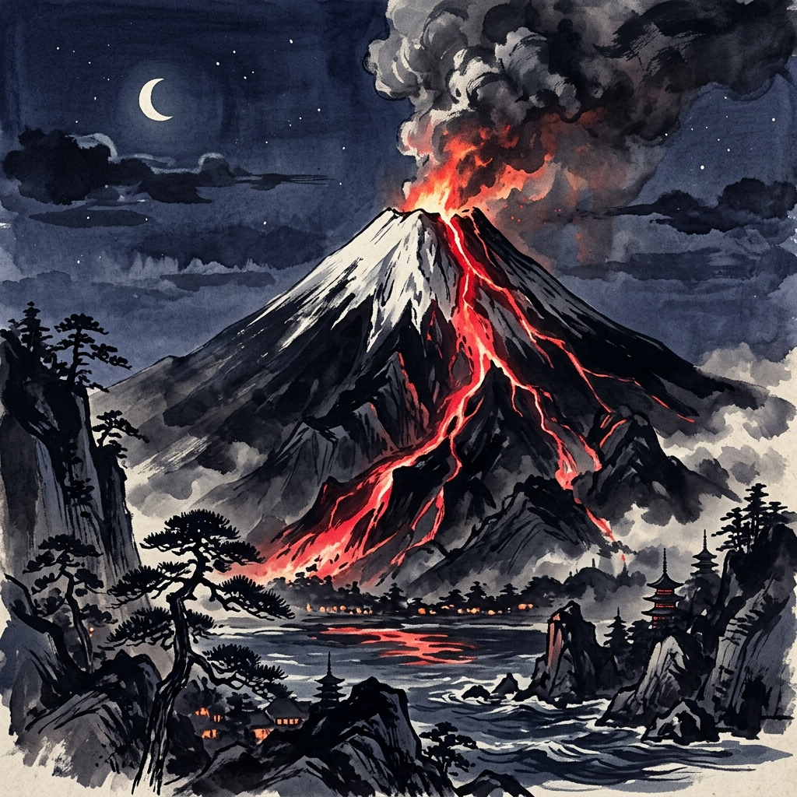

Tectonics & Volcanism
The Ring of Fire
Japan is situated along the Pacific Ring of Fire, a massive horseshoe-shaped seismically active belt of earthquake epicenters, volcanoes, and tectonic plate boundaries that fringes the Pacific basin.
The Japanese archipelago is the result of oceanic movements over hundreds of millions of years from the mid-Silurian to the Pleistocene. It lies at the complex intersection of four major tectonic plates: the Pacific Plate, the Philippine Sea Plate, the Eurasian Plate, and the North American Plate.
The subduction of the Pacific and Philippine Sea Plates beneath the Eurasian and North American Plates is the primary driver of Japan's intense geological activity, driving continuous mountain building (orogeny) and volcanic eruptions.

Seismic Hazards
Earthquakes
Japan experiences roughly 1,500 earthquakes a year. While most are minor tremors, the accumulated tectonic stress occasionally releases in massive, destructive quakes, such as the 1923 Great Kantō earthquake and the 2011 Tōhoku earthquake.
Tsunamis
The word "tsunami" originates from Japanese (tsu = harbor, nami = wave). These devastating seismic sea waves are triggered by underwater earthquakes at subduction zones. Japan's extensive and populated coastlines make it highly vulnerable to tsunamis.
Volcanoes
There are over 100 active volcanoes in Japan, representing about 10% of all active volcanoes in the world. Famous stratovolcanoes include Mount Fuji, which is currently dormant, and Sakurajima, one of the most active volcanoes on Earth, constantly raining ash on the nearby city of Kagoshima.